Welcome to my tutorial on how to make starfield like the one above using Adobe Photoshop. It also uses older tools and methods, so it should work in even out-dated versions of Photoshop or even similar graphics programs, at least on a informational level. I designed it for all skill levels so even if this is the first time you've started up Photoshop, dive right in. I hope you find it useful, informative, and fun.
Before we begin, there's a few things you'll need and I've listed them below.
And that's it. Pretty simple requirements.
1. Before we get into space, we'll have to make our document and create some layers. With Photoshop open, go ahead and create a new document. Your document requires a few specific settings to get the best results. First, make sure you're working in the 8 bit RGB Color Mode. Set the Background Contents to Black.
The rest is all up to you. I will be using an image size of 1920 x 1080 pixels at 150 DPI but you can choose any width, height, and resolution you desire. Hit OK and we're off to the races.
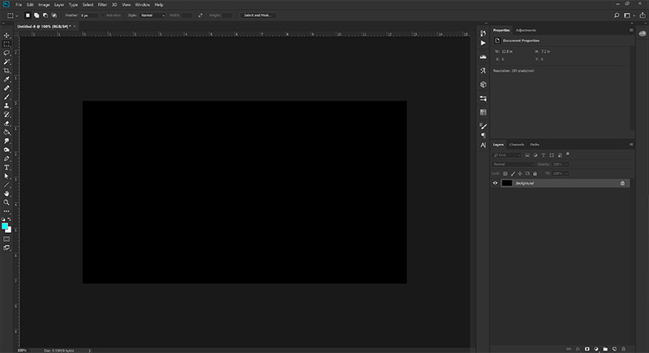The first steps...
Pro-Tip:
The DPI setting alters how certain effects like blur and glow work. Having a lower setting typically requires a smaller effect setting while a higher resolution requires larger effect settings. I find working at 150 - 300 DPI deliver the best results with minimal tweaking.
2. Now that we've got our document, we'll start setting up our Star layers. Go ahead and copy the Background layer so we have a second black layer. Rename this layer Base Far. Create a new, blank layer right above it and rename it Stars Far.
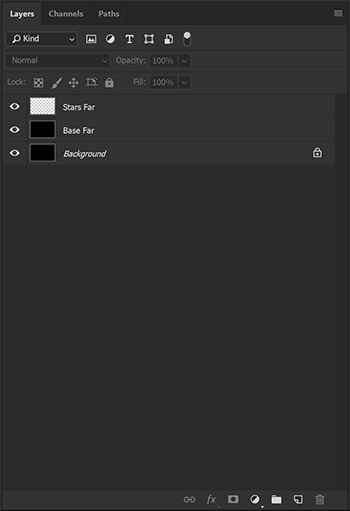Our first layers.
Pro-Tip:
1. You can create new layers by clicking the "Create a new layer" button at the bottom of the layer panel.
2. You can copy a layer or multiple layers by dragging them to the "Create a new layer" button.
3. Renaming a layer is easy if you just double click the name of the layer in the stack.
One of a Photoshop artist's best friend.
3. Since black and white space is kind of boring, let's do some prep for adding color later. Create another blank layer and call it Nebula Color. Copy our Base Far layer and move the copy to the top of the layer stack. Rename this one to Nebula Clouds and set the blending mode to Color Dodge. Then hide these two layers. We'll be getting to them in a while. But now we're all set to blast off!
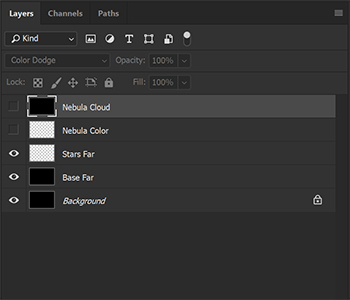Our current layers.
Pro-Tip:
Any new layer you make is placed above your currently selected layer or at the top of the stack if there is no layer selected. You can hide a layer by clicking on the eye next to the layer in the stack.
1. Select the Base Far layer and let's Add Noise from the Filter menu. We'll want to set the Amount to 400% and the distribution to Gaussian. Make sure the tickbox near Monochromatic is active. Hit OK and Behold! A staticy mess. But we can work with this, after we make some buddies for it.
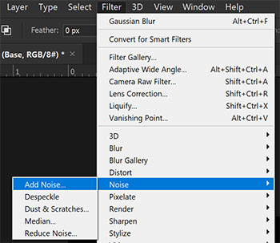Well that looks nothing like a starfield.
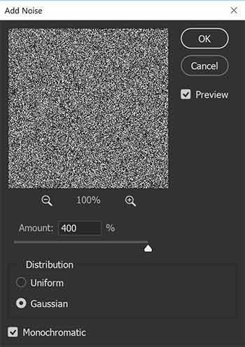The Guassian Noise Dialog
Pro-Tip:
We use Gaussian noise since the other option, Uniform, creates too clean of a distribution in the later stages. Gaussian allows for clumping which we're going to use to our advantage when we start giving our stars different effects. Ticking Monochromatic allows you keep the stars white which will play into how colors effect it in the end, but you can choose to untick it for some colorized stars with interesting appearances.
2. Select both the Base Far and Stars Far layers and copy them twice. Rename the Stars Far copies to Stars Middle and Stars Close and rename the Base Far copies to Base Middle and Base Close. Hide the Middle and Close layers so we're left with our original Stars Far and Base Far. We're now ready to declutter our sky a bit.
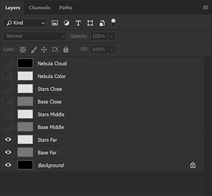Simple in its own way.
3. First up, let's select the Base Far layer and Blur it up. We'll want to use the Gaussian Blur option. That option will become our close friend as we move forward. These stars are going to be are smallest and farthest, so we don't need much blur. Let's set the Radius to .5 which will soften and slightly dim what we're looking at.
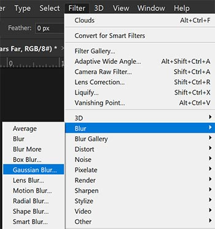After this project, go play around in this menu.
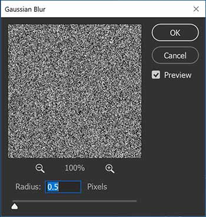Such a simple dialog, but so powerful
4. Next, let's thin things out a bit. With the Base Far layer selcted, lets make some Adjustments to it's Levels from the Image menu. We'll want to set the Black Point to 200 and the Grey point to .4. Looks a little bit more like the void we know and love. Let's call on another Gaussian Blur with a radius of .5 to help dim our distant buddies a bit more we're suddenly a whole lot closer to where we need to be.
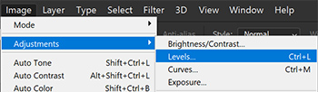We're gonna be coming back here a few times.
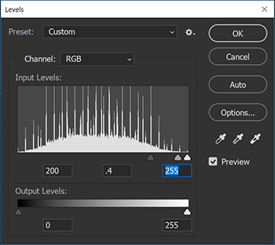Like a spooky cyberpunk city.
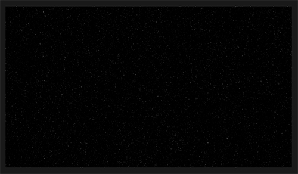Quite space-ish.
5. Let's hide the Base Far layer and replicate the effect on Base Middle with some slight alterations. First, select the Base Middle layer and unhide it. Set the first Gaussian Blur radius to 1, making our stars a bit dimmer, but larger. This will also change the levels arrangement a bit so we'll need different settings. We need less stars as these middle ones are supposed to be closer to us with less density. I used a black point of 200, a grey point of .2, and a white point of 215. A second Blur of .5 is perfect for this particular image.
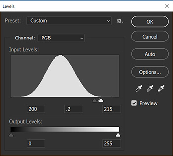Nice ski slope.
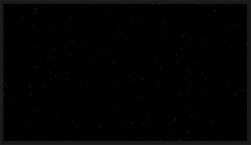Kinda space-ish.
6. Go ahead and hide the Base Middle layer now and repeat the steps with Base Close with the appropriate tweaks. We want our closest stars to be large, so a blur radius of 2 is best. The levels have to be tighter so we have brighter but fewer stars. I used a black point of 173, a grey point of .5, and a white point of 179 for our closer friends. The second Blur looked good at 1 so that is the setting I used.
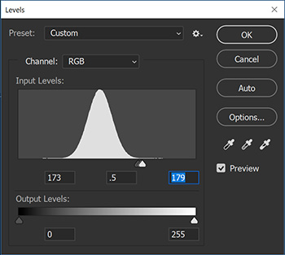The Coneheads came from France.
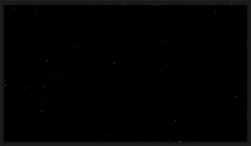Not very space-ish.
Pro-Tip:
These are the steps where you can play around a bit more. Various levels values will change the density and brightness of stars, while blur will alter their softness and brightness. Feel free to experiment so you can get the look you want.
7. Hey, remember those Stars layers we've been neglecting? Kind of funny that we're supposed to be making stars and haven't touched those empty layers. Let's fix that. Since we have Base Close selected let's start with that one. Next to the Layers tab there is the Channels tab. We're going to pull some data from here and use it back in the Layers section. With all four of the Channel layers selected and not hidden, click the little broken circle "Load channel as selection" button at the bottom of the panel. You'll see some marching ants on the image as the path information is turned into a selection. Go back to the Layer panel and select the Stars Close layer. Make sure its unhidden before filling the layer with white using the Fill command from the Edit menu. Set the Contents on the fill dialog to White and hit OK. Drop the selection using the Deselect command from the Select menu. Hide the Base Close layer to make sure the Stars Close layer is visible against the black background.
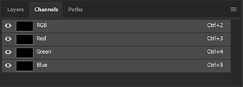A little detour from the layers panel.
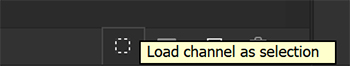A good way to harvest data to use elsewhere.
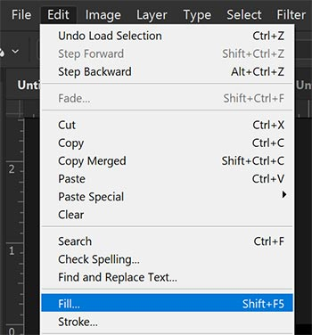A whole lot of things that look familiar.
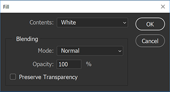Useful for more than just solid colors.
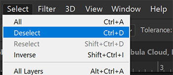Ctrl+D is your friend.
8. Repeat the previous steps for the Middle and Far layers. When you've finished you can delete the Base layers as they are no longer needed by selecting them and clicking the trash can "Delete layer" button. You should now see all our stars of various distances against a black background. And there is our simple starfield. But let's liven things up a bit.
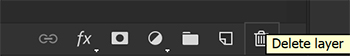Make extra sure before going crazy with this button.
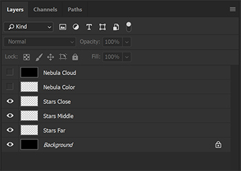An updated Layer stack.
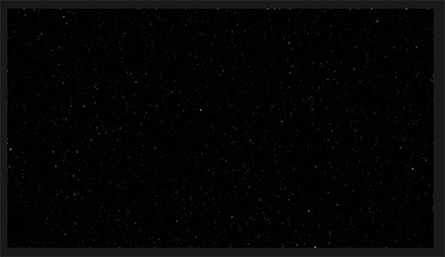Now we're cooking with hydrogen plasma.
1. Unhide the Nebula layers we made way at the beginning and select Nebula Cloud. Go up to the Filter menu and choose to Render a layer of Clouds. Because we set the blending mode of the Nebula Cloud to Color Dodge we'll see a considerable jump up in brightness in a few areas of our image. This helps seperate things out a bit but also sets us up for a bit of fun with color.
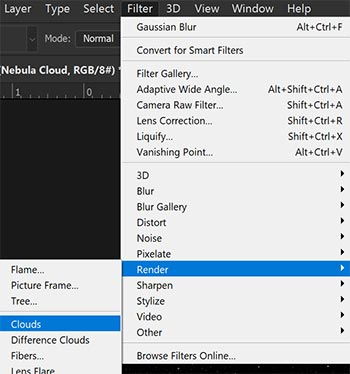This will kick it up a notch.
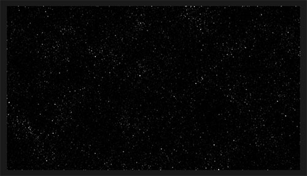Theres that notch.
Pro-Tip:
It's worth noting that the Clouds render is dependent on the size of the image. A larger image will have more areas of variability than a smaller image. You can always enlarge and move the cloud layer if you are working with a larger image but want less variability.
2. What we have is nice, but its missing a bit of panache. Select the Nebula Color layer and choose the Brush tool. Open the Brush Settings panel and choose the Soft Round 30 brush. Choose a very large brush size. I chose 900 px. Next ensure that the only setting ticked is Smoothing and that the Hardness is set to 0%. At the top of the window, set your opacity to 10% and your flow to 33%. You can mess around with these settings a lot to get your look, but these settings give a good baseline. Now choose a color and start painting. Hydrogen is extremely common in space so I picked a slightly pinkish red to start. I laid down a few strokes and used a total of four colors to get the effect I was looking for, a red at 255/0/42, a blue at 0/108/255, a green at 0/255/90, and a yellow at 255/255/0. I made sure to leave some black, but you can go nuts if you want a real heart of the nebula look.
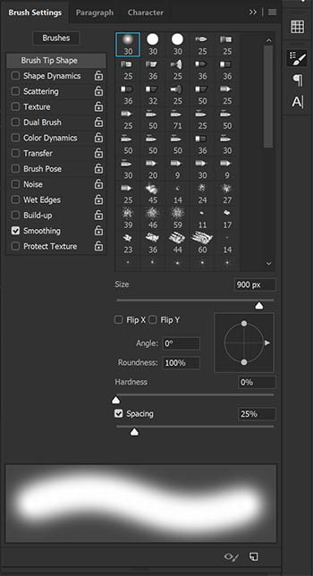Another well-known friend.
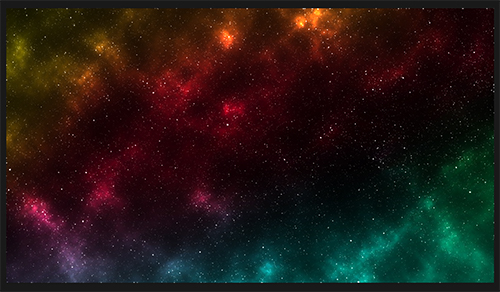Nearly there
3. Stars are supposed to glow and thankfully, Photoshop has the perfect preset for it. Select the Stars Middle layer and open up the Layer Style panel from the Layer menu by clicking on the Outer Glow option. We want the glow to match the stars base appearance so set the Blend Mode to Normal and the opacity to 75%. Ensure the Noise is set to 0% and set the color to white. The Technique should be set to Softer with a spread of 0% and Size of 20 px.
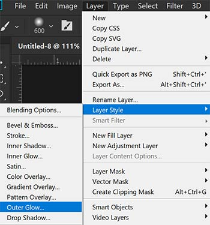Photoshop must come with everything!
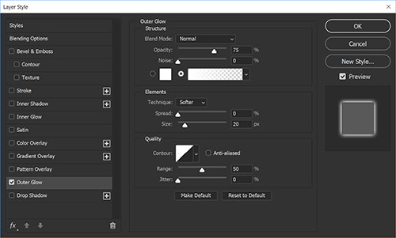So much power. But we're just dipping our toes in here.
4. Repeat the process for the Stars Close layer, but change the Outer Glow Size to 10 px. This will make the stars brighter and slightly more condensed. You don't need to repeat this step with Stars Far as they are supposed to be tiny little pinpoints of light already.
Pro-Tip:
Another way to access the Layer Styles dialog is to double click on the right side of the layer you want to put a style on. These settings require probably the most fiddling based on your chosen DPI. You can also create some really weird effects with the Layer Styles Panel, so have fun!
5. A problem usually occurs when using this technique and that is the overblown outer edge. The stars along there are distractingly bright, but this is why we broke our stars into seperate layers. It's an easy fix, too. Grab your Eraser tool and start removing the edge of the image from the Stars Close and Stars Middle layers. You can use this technique to also reduce the density of the stars more to your liking. I think our finished image looks pretty swell though, so I think I'll just clean up the edge.
6. That's it! Save out your image to your prefered format and enjoy your new stellar vista.
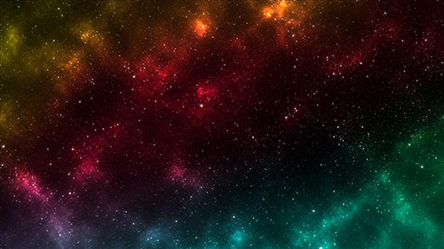And there we are!